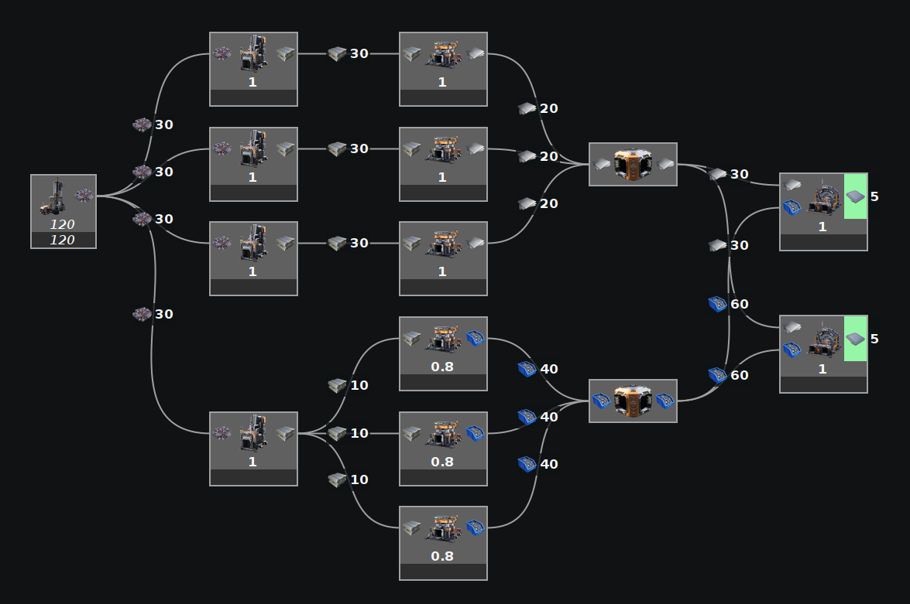
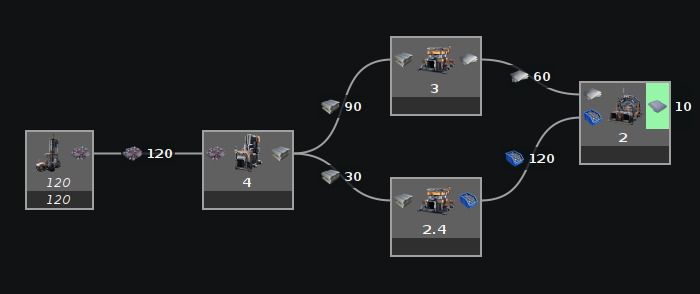
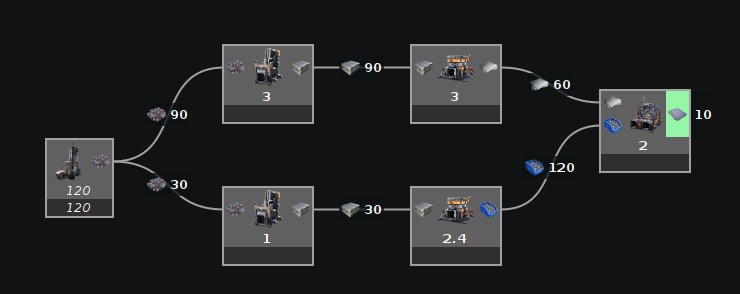

The Modeler is best used as a visual calculator, not as a layout planner. While it can calculate smaller load balancers and manifolds, that is best left out of the modeler for simpler, easier to read graphs and faster calculations.
Incorrect:

It is not recommended to use The Modeler like the above example where each machine is manually specified. While The Modeler can handle this for small setups, it may greatly slow down the calculations as it gets larger. Plus, it just takes a long time to manually specify out each machine and is completely unnecessary. The point of The Modeler is to calculate the number of these machines for you, not to have you place them all down individually.
Correct:


Place one of each recipe down and let The Modeler tell you how many you need. Not only will it calculate faster, but it is easier for you to enter.
Note that in the second correct example, there are two iron ingot smelters. It is ok to duplicate them in The Modeler if they are logically different paths.